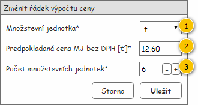

Formulář slouží k nastavení hodnot pro Řádek výpočtu ceny, který je jeho vstupním parametrem.
Formulář je zobrazován v modálním okně a jeho nadpis je Změnit řádek výpočtu ceny.
Vstupní data formuláře jsou následující:

| Callout | Komponenta | Nadpis | Typ komponenty | Příklad hodnoty | Hodnota | Výchozí hodnota | Formát | Zpřístupněná | Viditelná | Chování | Validace | Poznámka |
|---|---|---|---|---|---|---|---|---|---|---|---|---|
| 1 | Množstevní jednotka | Množstevní jednotka* | ComboBox | t | Entita Množstevní jednotka. Dostupné jsou pak takové Množstevní jednotky, u kterých je hodnota atributu Dostupné pro druh odpadu rovna TRUE. | Hodnota atributu Množstevní jednotka entity Řádek výpočtu ceny, která je získána na vstupu. | Vždy | Pokud hodnota atributu Typ cenové položky entity Řádek výpočtu ceny, která je získána na vstupu, nabývá jedné z uvedených hodnot:
| – | – | – | |
| 2 | Předpokládaná cena množstevní jednotky | Liší se dle hodnoty získané na vstupu – Je plátce DPH:
| TextBox | 12,60 | Entita Množstevní jednotka. | – |
| Vždy | Vždy | – | Hodnota z uzavřeného intervalu od 0 do 100 000. | – |
| 3 | Počet množstevních jednotek | Počet množstevních jednotek* | NumericUpDown | 6 | Entita Množstevní jednotka. | – | Vždy | Vždy | – | Hodnota z uzavřeného intervalu od 0 do 100 000. | – |